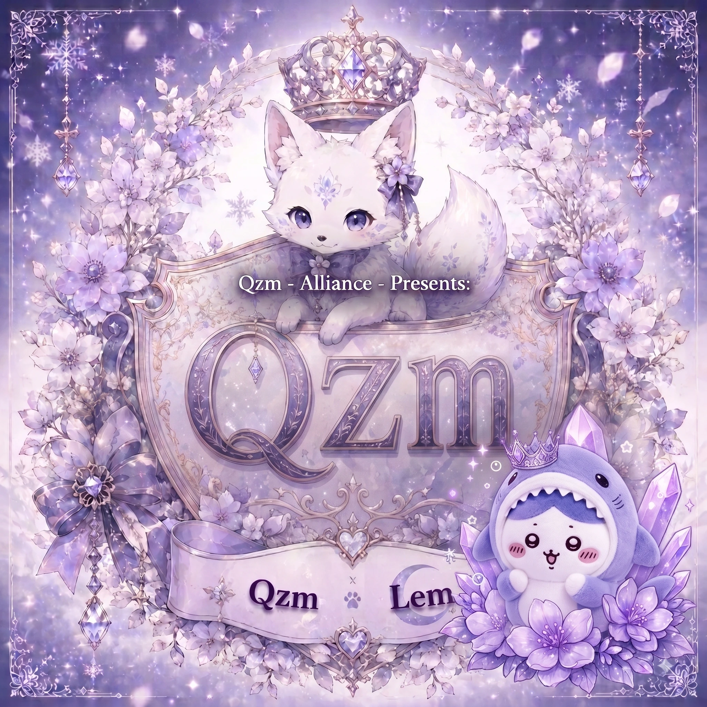

差し込み計算 ＆ シングル/同盟一斉統合モード v1.06.14 βテスト版

相手の集結状況に合わせてワンタップで切り替えます。
・集結中: 「相手の行軍時間」を加算して着弾を算出（3項目入力）。
・行軍中: 敵の行軍残り時間から直接逆算（2項目入力・敵行軍時間は自動非表示）。
自分が出征してターゲット(砦や王城等)に到着するまでの時間（分:秒）を入力します。タップすると専用ミニテンキーが開き、ワンタップで素早く入力・変更できます。
相手(敵)が出征してターゲット(砦や王城等)に到着する時間を入力します。
ホワサバ内の集結画面に表示されている集結中時間を入力します。右横の [⚙調整 ▾] から分・秒・コンマ秒をクイック同期できます。
相手着弾に対して何秒遅れで差し込むかを設定メニューから選択できます（標準: +0.3s）。相手着弾直後にピッタリ自分の行軍が重なる最速発車時刻を自動算出し、カウントダウンでお知らせします。
ホワサバの防衛/集結画面のスクリーンショットを貼り付けるだけで、画像内の「集結中/行軍中残り時間」「敵名」「同盟タグ」をAI文字認識（OCR）で瞬時に抽出！撮影時刻からの経過タイムラグも完全自動減算され、1ミリ秒のズレもなく即座に差し込み計算がスタートします！
iPhoneショートカットで背面ダブルタップしてスクショをクリップボードにコピー後、[📋 貼付] ボタンを押すと一瞬でプレビュー画面が立ち上がります。
スクショ内に複数の敵行軍が写っている場合、プレビュー画面で差し込みたいターゲット行軍をワンタップで選択して確定できます。
ホワサバの秒針に合わせて [:00s]〜[:50s] の一発ジャンプ同期や、通信ラグに合わせた +0.1s〜+1.0s のコンマ秒手動微調整を行えます。
相手集結残り時間の分単位（0〜5分）や秒数刻み（10〜50s）、加算・減算（±1.0s / ±0.1s）を専用画面で安全に微調整できます。
発車10秒前からカウントダウンビープ音および振動が発生し、発車瞬間にダブルチャイムでお知らせします（設定でON/OFF可能）。
アプリ内の全設定（音・バイブ・目標マージン・ボタンテーマ・同盟グループ名簿・計算履歴・作戦メモ）を1つのJSONファイルとして書き出し・読み込みできます。機種変更時やデータのバックアップに最適です。
差し込み計算結果をもとに、同盟チャットやDiscordへそのまま貼り付けられる作戦号令テキストを1タップで生成・コピーできます。人数が多い場合はホワサバのチャット行数制限に合わせて自動で【Part 1】【Part 2】と8名ずつ分割コピーボタンが出現します。
同盟員の名前と行軍時間を名簿登録・CSV一括インポート可能。検索枠で「山田、佐藤、鈴木」と読点やカンマで区切ると複数人を一発抽出できます。
選択された同盟メンバー全員の各自の最適発車時刻と、最速者との時間差（+◯.◯秒）をリアルタイムに自動計算して一覧表示します。行タップで黄色枠の注目トラッキングも可能です。
名簿一覧・送信対象選択・チャットコピーの全画面で、[名前順] と [時間順（発車が早い順）] をワンタップで瞬時に切り替えられます。
コロン（:）を使って「時:分:秒」を直感的に足し引きできます。（例: 15:20 + :10 ➔ 15:30、1:30:00 + 5:00 ➔ 1:35:00）
秒数や分（例: 10000秒、1000分）を入力するだけで、「①時分秒 / ②分秒 / ③総秒数」へリアルタイム一括変換され、メイン画面の差し込み時間へ転送できます。
短縮したい目標時間を入力すると、ホワサバの加速アイテム（8h/1h/5m/1m）に応じた「最適組み合わせ個数」および「単独使用時の必要個数」が自動算出されます。
過去の計算式が自動保存され、メモを書き残したりワンタップで再利用・メイン反映できます。